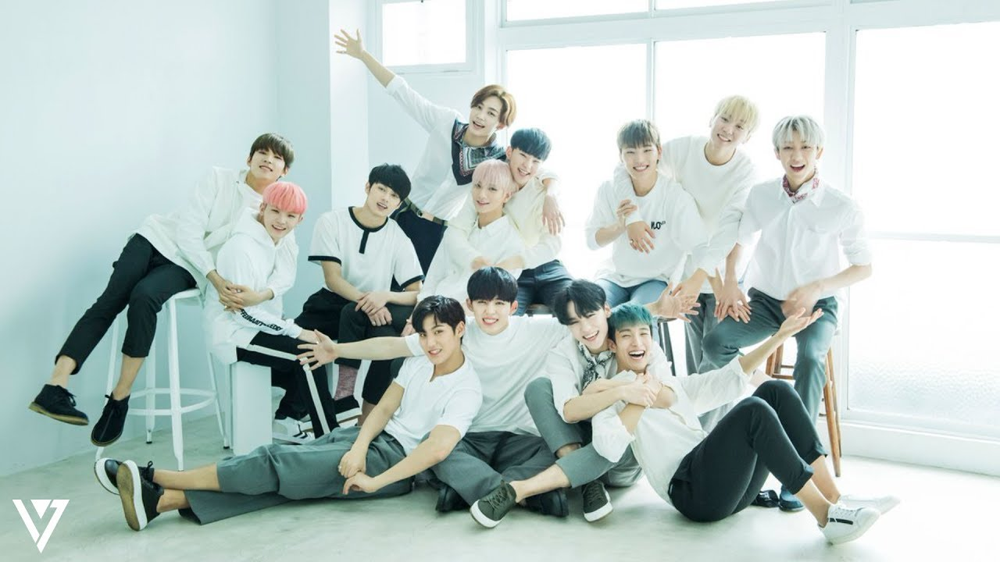

| ABOUT SEVENTEEN  |
|---|
|
Seventeen, also stylized as SEVENTEEN or SVT, is a South Korean boy group formed by Pledis Entertainment in 2015. The group consists of thirteen members divided into three sub-units, each with a different area of specialization: a 'Hiphop Unit', 'Vocal Unit', and 'Performance Unit'. Seventeen has released two studio albums and five extended plays. The group's members are deeply involved in the composition and production of their discography and choreography and have been since before their debut, which prompted their nickname as a "self-producing" idol group. |
|
2015: Debut with 17 Carat and Boys Be Seventeen debuted on May 26 with a live showcase televised by MBC. They were the first male K-pop group to debut with a one-hour live showcase on a major broadcasting channel. Three days later, their first mini album, 17 Carat17 Carat became the longest-charting K-pop album of the year in the US and was the only rookie album to appear on Billboard's "10 Best K-pop Albums of 2015" chart. On September 10 their second mini album Boys Be was released, which would later become the highest selling rookie album of 2015. The album's success earned the group awards at the Golden Disk Awards, Seoul Music Awards and Gaon Chart K-Pop Awards. Seventeen was also the only K-pop group on Billboard's "21 Under 21 2015: Music's Hottest Young Stars" list. Seventeen held a four-date concert series titled 2015 Like Seventeen – Boys Wish from the 24th to the 26th of December as an end-of-year celebration in Seoul. After the concerts' success, Seventeen held two related concerts the following February in 2016, entitled Like Seventeen – Boys Wish Encore Concert. On February 14, the official fanclub name Carat was announced. |
|
2016: Love & Letter, Asia Tour and Going Seventeen Seventeen's first full-length studio album Love & Letter was released on April 25, 2016. The album charted on the Oricon Weekly Pop Album Charts in Japan besides success on domestic charts. Seventeen received their first win on a music show with the album’s lead single "Pretty U". Love & Letter was later re-released as a repackaged version on July 4 along with the lead single "Very Nice". Promotions were immediately followed by Seventeen's 1st Asia Tour 2016 Shining Diamonds, which included venues in South Korea, Japan, Singapore, Australia and China. On December 5 the group released their third mini album Going Seventeen, which outsold Love & Letter. |
|
2017: Al1, 2017 Seventeen Project, Diamond Edge and Teen, Age Seventeen held six concerts in Japan between February 15–24 named 17 Japan Concert: Say The Name #Seventeen. The concerts attracted a total of 50,000 spectators despite the group's not having officially debuted in Japan. On April 1, Seventeen became the first idol group to have a second season of the show One Fine Day after filming the series during their stay in Japan. The second season was titled One Fine Day in Japan and was created in collaboration between South Korean broadcaster MBC and Japanese network Music On! TV. Seventeen's fourth mini album, Al1, was released on May 22, 2017. A series of videos titled 2017 Seventeen Project and three music videos subtitled Chapter 0.5 Before AL1 were subsequently uploaded. The group completed their first world tour, 2017 Seventeen 1st World Tour: Diamond Edge, during which they visited thirteen cities in Asia and North America, on October 6. On November 6, the group's second full-length studio album Teen, Age was released. |
|
2018: Director's Cut, Japanese debut, You Make My Day Seventeen released a special album on February 5, named Director's Cut. Although Director's Cut contained all tracks from the previous Teen, Age album, it was promoted as a special album instead of a repackaged one due to the presence of four new tracks, including lead single "Thanks"."Thanks" reached first place on iTunes charts in 29 countries, including countries from North America, South America, Europe, and Asia. Time magazine named Seventeen one of the best K-pop groups during this promotion period. Seventeen officially debuted in Japan on May 30 with their first Japanese mini-album, We Make You. The music video for the lead single "Call, Call, Call!" was released on May 16. Seventeen released their fifth mini album, You Make My Day, on July 16. You Make My Day broke the group's personal record for most sales in the first week after release, and is their best-sold album overall to date, awarded with Platinum status. Promotions for this album took place in between the Ideal Cut concerts in Seoul and concerts scheduled in other countries in Asia. |